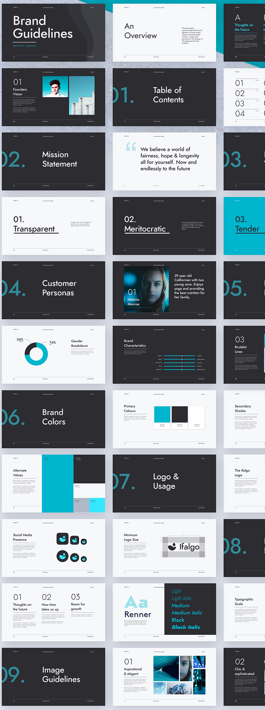

Navigating intricate structures and dependencies in extensive projects.
Large dynamic teams
Coordinating work and maintaining consistency across diverse coding styles.
Evolving Requirements
Adapting to changing project needs while preserving code integrity.
Maintenance Difficulties
Keeping large codebases organized, efficient, and bug-free over time.
Where is CSS hard?
Building meme
Anything wrong?
H1 { color: blue }
P EM { font-weight: bold }
A:link IMG { border: 2px solid blue }
A:visited IMG { border: 2px solid red }
A:active IMG { border: 2px solid lime }
What makes CSS hard?
Vertical centering
Equal height columns
Browser inconsistencies
Unobvious tricks
What really makes CSS hard?
Scoping
Specificity conflicts
Non-deterministic matches
Dependency management
Removing unused code
CSS has no scoping
a { /* Affects all the links */
color: red;
}
ul li a { /* Affects all the links in lists */
color: green;
}
Specificity
Specificity is the means by which a browser decides which property values are the most relevant to an element and gets
to be applied. Specificity is only based on the matching rules which are composed of selectors of different sorts.
The most specific matters
<div id="test">
<span>Text</span>
</div>
div#test span { color: green }
span { color: red }
div span { color: blue }
How to overwrite?
<div class="sidebar">Left floated sidebar</div>
.sidebar { /* Does it redefine `div.sidebar`?! */
float: right;
}
.navbar-inverse .navbar-nav>li>a {
color: #999;
}
#home-menu-container #home-menu li a {
color: red;
}
body #home-menu ul li a {
color: blue !important;
}
{: .code--size--m }
Family guy meme
Non-deterministic matches
#content div div {
float: left;
}
Doctor meme
Dependency management
No dependencies, sorry
But what about?
@import url('i-need-this.css');
No, sorry again.
Removing unused code
100 pages in projects
.person div a {
color: pink;
}
Can I remove it? Will it break something? Maybe it is for a third-party HTML code?
Where CSS is hard?
This is not hard in CSS
This is!
#sidebar ul li a {
color: red;
display: block;
padding: 1em;
}
#sidebar ul li a {
color: red;
display: block;
padding: 1em;
}
Where is JavaScript hard?
Old-School JavaScript Challenges
Direct DOM Manipulation
Messy code with direct element selection and modification.
Event Handling Complexity
Difficult management of multiple event listeners and callbacks.
State Management
Lack of centralized state leading to inconsistent UI updates.
Maintenance Problems
Spaghetti code without clear structure, making updates risky.
Maintenance Mayhem
Code Comprehension
Difficulty understanding complex, intertwined code over time.
Risky Updates
Fear of breaking unknown dependenciesч when making changes.
Inconsistent Components
Similar components diverge, leading to maintenance nightmares.
Scalability Issues
Growing projects become increasingly difficult to manage and expand.
Component-Driven Development
Component-Driven Development
UI Breakdown
Dividing interfaces into reusable, independent components.
Encapsulation
Bundling functionality and styling within self- contained units.
Consistency
Promoting uniform design and behavior across the application.
Maintainability
Easier updates and bug fixes with isolated component logic
Benefits of Component-Driven Development
Reusability
Easier Testing
Improved Collaboration
Faster Development
Components can be easily reused across different parts of the application.
Isolated components allow for more straightforward and thorough testing.
Designers and developers can work more efficiently on specific components.
Reusable components speed up the development and iteration process.
Component-Driven Development in JavaScript Frameworks
React
Virtual DOM, JSX syntax
Angular
Directives, two-way data binding
Vue
Reactivity system, template-based components
Web Components (Lit, Stencil)
Framework-agnostic
CSS Modules
Scoped Styles by Default: CSS Modules provide scoped styles by default, preventing global conflicts.
Automatic Unique Class Names: Class names are automatically transformed into unique identifiers, ensuring local scope.
Easy Style Composition: Allows for composition of styles across multiple CSS Modules, enabling reusable and modular design.
CSS Isolation: Avoids styling collisions by scoping styles to individual components, promoting maintainable and scalable code.
CSS-in-JS: Dynamic Styling
Styled-components
Allows you to write CSS directly within JavaScript.
Emotion
Supports for both string and object styles.
JSS
CSS as JavaScript objects, commonly used with React.
Stitches
Near-zero runtime, lightweight, focus on architecture.
Design systems are the foundation of consistent user interfaces. They provide reusable components, patterns, and guidelines for creating cohesive products across platforms.
"Design systems" is a systematic approach for creating, implementing, and maintaining user interfaces.
Key Components of a Design System
Design Tokens
Fundamental design elements like colors, typography, and spacing.
UI Components
Reusable interface elements such as buttons, forms, and cards.
Patterns
Recurring solutions for layout structures and interaction patterns.
Guidelines
Usage rules, accessibility standards, and best practices.
Design Systems — Why?
Consistency Across Products
Design systems ensure a unified look and feel across all digital products, reinforcing brand identity and improving user recognition.
Enhanced Collaboration
A shared language and resource base foster better communication between designers, developers, and other stakeholders.
Accelerated Development
By providing pre-built components and clear guidelines, design systems significantly reduce development time and effort.
Simplified Onboarding
New team members can quickly understand and contribute to projects by referencing the comprehensive design system documentation.
A color palette that includes primary, secondary, and accent colors, along with their various shades and tints. These colors are used consistently across all UI elements to maintain visual harmony.
Typography
A set of font families, sizes, weights, and line heights that define the textual hierarchy and readability of the interface. This includes headings, body text, captions, and other typographic elements.
Spacing
Standardized units of measurement for margins, padding, and layout grids. Consistent spacing ensures proper alignment and visual rhythm throughout the interface.
UI Components: The Building Blocks of UI
Buttons
Interactive elements that trigger actions or navigate users to different parts of the application.
Forms
Input fields, checkboxes, and other elements that allow users to enter and submit data.
Cards
Containers for presenting related information in a compact and visually appealing format.
Navigation
Menus, breadcrumbs, and other elements that help users move through the application.
Patterns: Solving Common UI Challenges
Layout Structures
Standardized arrangements of UI elements, such as grid systems and responsive layouts, that ensure consistency across different screen sizes and devices.
Interaction Patterns
Common user behaviors and expectations, like hover effects, drag-and-drop functionality, and scrolling behaviors, that are implemented consistently throughout the interface.
Data Visualization
Guidelines for presenting complex information in easily digestible formats, including charts, graphs, and infographics.
Error Handling
Consistent approaches to displaying and resolving errors, including form validation, error messages, and recovery options.
Guidelines: Ensuring Proper Implementation

Usage Rules
Clear instructions on when and how to use specific components and patterns, including do's and don'ts to maintain consistency and effectiveness.
Accessibility Standards
Detailed requirements for ensuring that all UI elements are accessible to users with disabilities, including color contrast ratios, keyboard navigation, and screen reader compatibility.
Responsive Design Guidelines
Principles for adapting layouts and components to different screen sizes and devices, ensuring a consistent experience across platforms.
Brand Voice and Tone
Guidelines for maintaining a consistent brand personality in all textual elements, including microcopy, headings, and error messages.
Master thesis in International Design Business Management (IDBM) by Varya Stepanova, Aalto University, 2021
What exactly changes?
The old school way
Dashed process
Products are systems
Products are systems rather than pages and as soon as we stop perceiving them as that, the better.
Anna Debenham
UI composition
Creating UI with a design system
Tools for Design Systems
Design and Handoff
Documenting
Tokens Streamline
Development Playgrounds
Testing
Tools examples
Design and Handoff
Figma, Sketch, Zeplin
Documenting
Storybook, Zeroheight, Confluence, Notion
Tokens Streamline
Style Dictionary, Supernova
Development Playgrounds
Storybook, Bit.dev
Testing
Chromatic, Testplane, Jest
Business value of design system
Product recognizability
Faster design and development
Fewer costs
"Time to market" decreased
Doing "real work"
Getting mature
⬅
Maturity
The highest levels of maturity are achieved with design systems
The very fact of design systems emerging as a new approach and a set of artifacts that affect the process of development demonstrates the subject of Organizational Innovation and Deployment.
Design Systems Advanced Challenges
Advanced challenges
Maintaining and Scaling Design Systems
API
Balance between standartisation and customization
Automations
Design systems and AI
Design systems and AI
Structured AI-Agent Friendly Architecture
Design systems are AI-friendly, thanks to their structured nature. An AI agent can introduce new tokens and
create new components and patterns "by analogy".
Automations and Rapid Development
AI-powered automation make development cycles faster. From generating component variants to automated testing and documentation updates.
Custom MCP (Model Context Protocol)
AI agents can interact with a design system through custom MCPs.
This ensures correct usage of design systems and coherent UX across brand portfolio.
Custom MCP for Design Systems
The Problem: Uncontrolled AI Generation
AI Agents Are Everywhere
Developers increasingly use AI to generate code quickly and easily.
Custom Solutions Proliferate
Without guidance, AI creates ad-hoc solutions using Tailwind, custom CSS, etc.
Brand Coherence Breaks Down
Over time, inconsistent implementations fragment the user experience.
Design System Adoption Drops
Teams bypass established patterns in favor of AI-generated shortcuts.
The Solution: Taming AI with MCP Server
Model Context Protocol (MCP) Server is
a dedicated server that provides AI agents with structured access to your design system, ensuring consistent component usage and brand adherence.